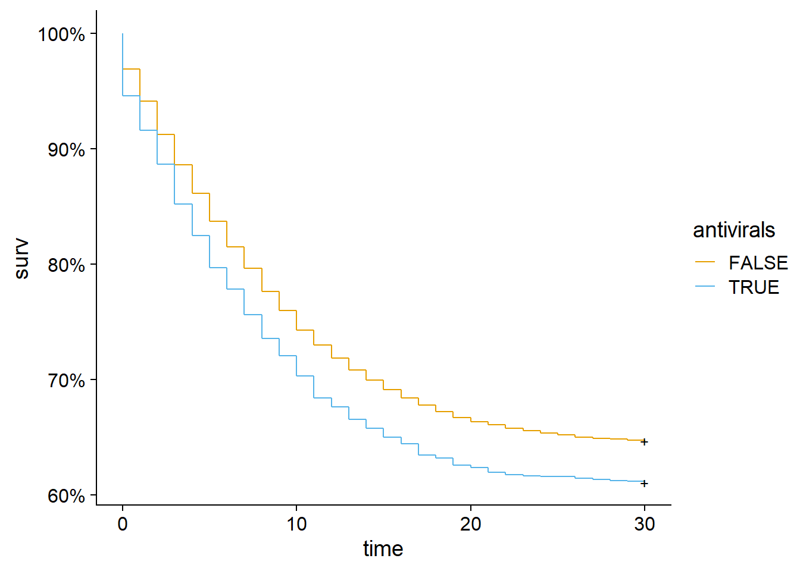
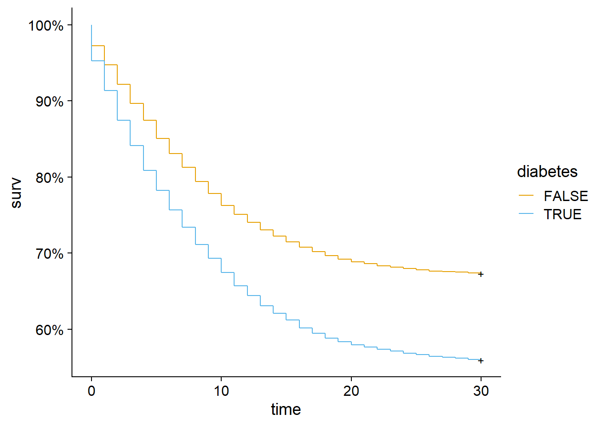
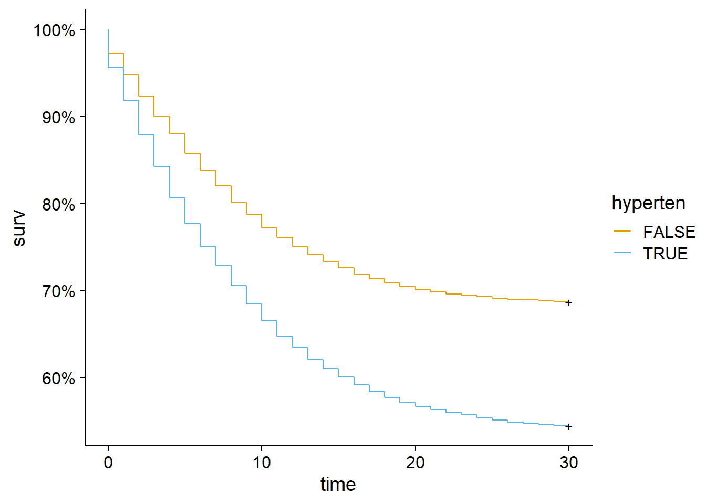
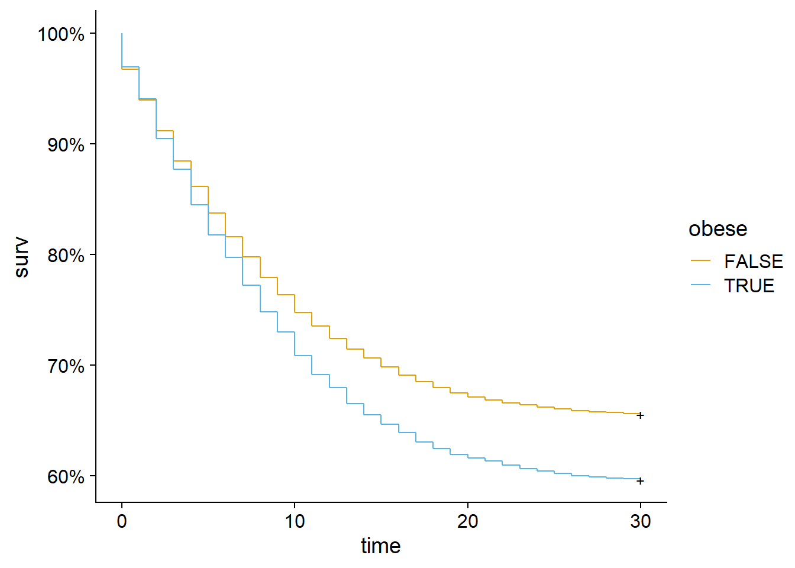
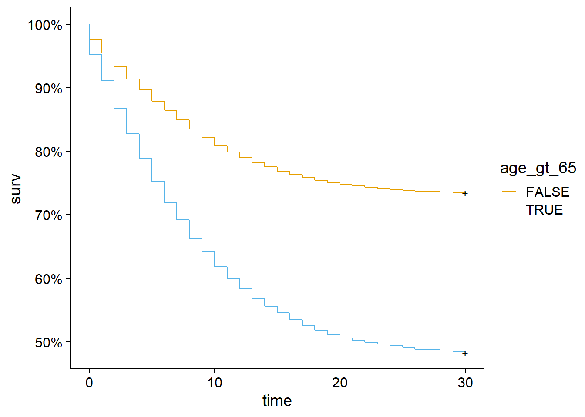
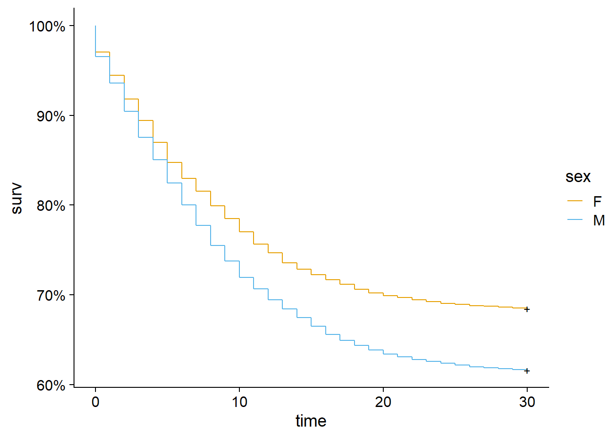
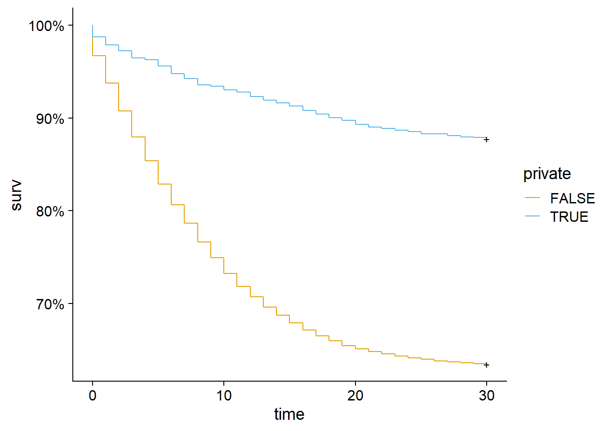
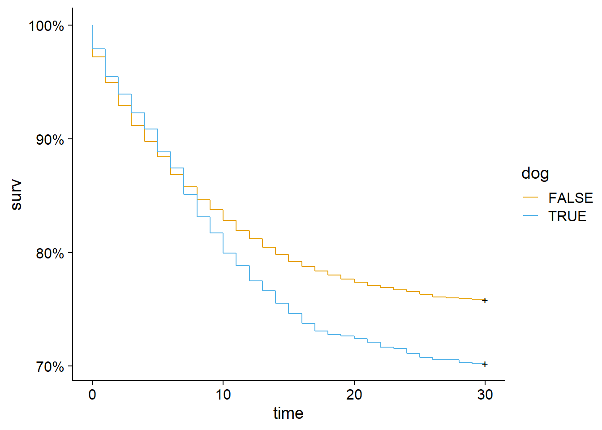
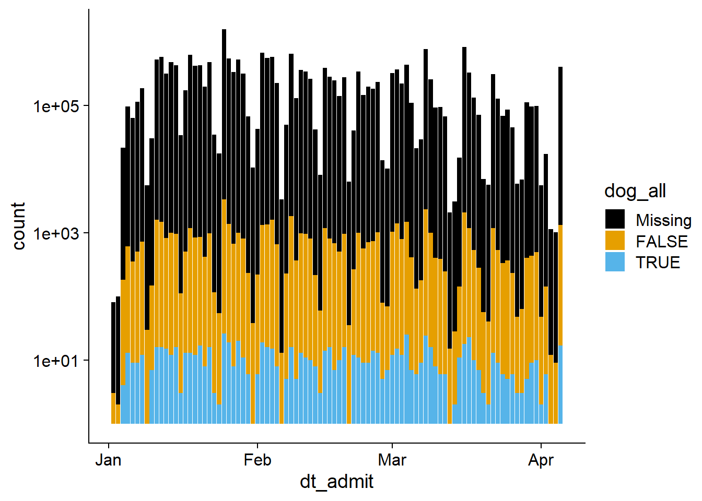
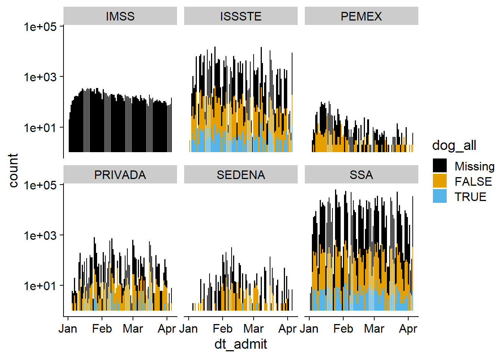

# We will be using the following packages in today's lab.
library(dplyr)
library(readr)
library(stringr)
library(lubridate)
library(purrr)
library(survival)
library(ggfortify)
library(ggplot2)
library(cowplot)
theme_set(theme_cowplot())
library(patchwork)
source('https://tinyurl.com/wjm6ryj') # colorblind palettes
library(knitr)COVID Data Exploration
Agenda
- Today’s lab
- Review of Canine Confounders
- Practice visualization using
ggplot2
Canine confounders
We’ll be using a COVID-19 dataset from Mexico City that was featured in an article in Significance Magazine titled Canine Confounders [@nunez2022].
What is presented here is intentionally rough and open ended. After filling in the missing details in the starter code, what other questions might you have? What other tests and/or visualizations might be interesting?
# download data if we haven't already
if(!file.exists('sisver_public.csv'))
{
download.file(url = "https://archivo.datos.cdmx.gob.mx/sisver/covid19_sisver_cdmx.csv",
destfile = "sisver_public.csv")
}
# only do this formatting step once
if(!file.exists('sisver.RData'))
{
sisver <- read_csv('sisver_public.csv') %>%
rename(dt_symptoms = fecha_inicio_sintomas, # date that symptoms started
dt_admit = fecha_ingreso, # date admitted to hospital
dt_death = fecha_defuncion # death date
) %>%
# primary outcomes
mutate(hospitalized = tipo_paciente == 'HOSPITALIZADO',
covid_death = !is.na(dt_death),
intubation = intubado == 'SI',
death_intubation = covid_death | intubation,
# survival variables
event_date = if_else(is.na(dt_death), # censor at 30 days
dt_admit + days(30), dt_death),
event_time = seconds_to_period(event_date - dt_admit)@day,
t_sympt_death = Surv(event_time, covid_death),
# risk factors and confounders
dog = ifelse(conanima == "", NA, # look for dogs as pets
str_detect(conanima, "PERR|PERO|PERRI|CANINO")),
private = sector == "PRIVADA", # private sector care
pet_info = !is.na(dog), # has info on pets
dog_all = ifelse(pet_info, # add dog category for missing
dog, 'Missing') %>%
factor(levels = c('Missing', 'FALSE', 'TRUE')),
antivirals = ifelse(txantivi == "", NA, # used antivirals
txantivi == "SI"),
diabetes = ifelse(diabetes == "", NA, # has diabetes
diabetes == "SI"),
hyperten = ifelse(hiperten == "", NA, # has hypertension
hiperten == "SI"),
obese = ifelse(obesidad == "", NA, # has obesity
obesidad == "SI"),
age_gt_65 = edad >= 65, # age > 65 years
sex = ifelse(sexo == "MASCULINO", # sex
'M', 'F')) %>%
########################################################################
#### Filter data such that we only have individuals with:
### hospital admission date between Jan 1, 2021 and Apr 5, 2021
### individuals were hospitalized
### event time is between 0 and 30 days
########################################################################
filter(da_admit >='2021-1-1' & da_admit<='2021-4-5'&
hospitalized & event_time >0 & event_time < 30) %>%
select(dt_symptoms, dt_admit, dt_death, covid_death, event_date,
event_time, death_intubation, t_sympt_death, dog, dog_all,
private, pet_info, antivirals, diabetes, hyperten, obese,
age_gt_65, sex, sector)
save(sisver, file = 'sisver.RData')
}else{
load('sisver.RData')
}
load('sisver.RData')Let’s start by looking at the primary effects of different risk factors and confounders on mortality.
table1 <- tibble(factor = c('Antivirals', 'Diabetes', 'Hyptertension',
'Obesity', 'Age > 65', 'Sex (male)',
'Private Sector', 'Dog ownership'),
death_intubation = list(
glm(death_intubation ~ antivirals, data = sisver, family = binomial),
glm(death_intubation ~ diabetes, data = sisver, family = binomial),
glm(death_intubation ~ hyperten, data = sisver, family = binomial),
glm(death_intubation ~ obese, data = sisver, family = binomial),
glm(death_intubation ~ age_gt_65, data = sisver, family = binomial),
glm(death_intubation ~ sex, data = sisver, family = binomial),
glm(death_intubation ~ private, data = sisver, family = binomial),
glm(death_intubation ~ dog, data = sisver, family = binomial)),
OR = map_dbl(death_intubation, ~
exp(summary(.x)$coefficients[2,1])),
p_OR = map_dbl(death_intubation, ~
summary(.x)$coefficients[2,4]),
death_survival = list(
coxph(t_sympt_death ~ antivirals, data = sisver),
coxph(t_sympt_death ~ diabetes, data = sisver),
coxph(t_sympt_death ~ hyperten, data = sisver),
coxph(t_sympt_death ~ obese, data = sisver),
coxph(t_sympt_death ~ age_gt_65, data = sisver),
coxph(t_sympt_death ~ sex, data = sisver),
coxph(t_sympt_death ~ private, data = sisver),
coxph(t_sympt_death ~ dog, data = sisver)
),
HR = map_dbl(death_survival, ~
summary(.x)$coefficients[2]),
p_HR = map_dbl(death_survival, ~
summary(.x)$coefficients[5]))
select(table1, factor, OR, p_OR, HR, p_HR) %>%
mutate(p_OR = format.pval(p_OR),
p_HR = format.pval(p_HR)) %>%
kable(digits = c(NA, 2, 4, 2, 4),
align = c('l', 'r', 'r', 'r', 'r'))| factor | OR | p_OR | HR | p_HR |
|---|---|---|---|---|
| Antivirals | 1.15 | 0.01179 | 1.15 | 0.00108901 |
| Diabetes | 1.60 | < 2.22e-16 | 1.48 | < 2.22e-16 |
| Hyptertension | 1.80 | < 2.22e-16 | 1.61 | < 2.22e-16 |
| Obesity | 1.38 | < 2.22e-16 | 1.21 | 5.1218e-15 |
| Age > 65 | 2.74 | < 2.22e-16 | 2.33 | < 2.22e-16 |
| Sex (male) | 1.39 | < 2.22e-16 | 1.27 | < 2.22e-16 |
| Private Sector | 0.40 | < 2.22e-16 | 0.28 | < 2.22e-16 |
| Dog ownership | 1.51 | 4.1337e-08 | 1.25 | 0.00090071 |
Here are Kaplan-Meier plots for our risk factors and confounders.
make_km_plot <- function(fact)
{
# fit survival curve for fact
survfit(formula(paste("t_sympt_death ~", fact)), data = sisver) %>%
# plot survival curve
autoplot(conf.int = FALSE) +
labs(color = fact) +
scale_color_manual (values = cbbPalette[2:3])
}
########################################################################
# modifications to plot:
### use `cbbPalette` loaded above for colors
### change legend title to match `fact`
########################################################################
make_km_plot('antivirals')
make_km_plot( 'diabetes')
make_km_plot( 'hyperten')
make_km_plot( 'obese')
make_km_plot( 'age_gt_65')
make_km_plot( 'sex')
make_km_plot( 'private')
make_km_plot( 'dog')
Lets take a look at the missing rate of dog ownership by the hospital they were admitted to.
with(sisver, table(sector, dog_all)) %>%
kable()| Missing | FALSE | TRUE | |
|---|---|---|---|
| CRUZ ROJA | 6 | 0 | 0 |
| ESTATAL | 23 | 12 | 0 |
| IMSS | 16306 | 1 | 1 |
| IMSS-OPORTUNIDADES | 1 | 0 | 0 |
| ISSSTE | 2077 | 1495 | 363 |
| PEMEX | 465 | 263 | 1 |
| PRIVADA | 796 | 614 | 84 |
| SEDENA | 608 | 277 | 17 |
| SEMAR | 16 | 1 | 1 |
| SSA | 5580 | 2463 | 440 |
| UNIVERSITARIO | 1 | 0 | 0 |
After removing a few sectors that don’t have much data, let’s look at this graphically over time.
# start by removing those that have very few samples
sisver_sub <- sisver %>%
########################################################################
## filter `sisver` such that sector is not in:
## c('CRUZ ROJA', 'ESTATAL', 'IMSS-OPORTUNIDADES', 'SEMAR', 'UNIVERSITARIO')
########################################################################
filter(!sector %in% c('CRUZ ROJA', 'ESTATAL', 'IMSS-OPORTUNIDADES', 'SEMAR', 'UNIVERSITARIO'))
########################################################################
# first stacked bar plot
## hint: `geom_bar()` is what you want for the stacked bar plot
########################################################################
########################################################################
# grid of stacked bar plots, separated by sector
########################################################################
g1 <- ggplot(sisver_sub, aes(dt_admit, fill = dog_all))+
geom_bar()+
scale_y_log10()+
scale_fill_manual( values = cbbPalette)
g1
g1+facet_wrap(~sector)
How does the risk of death change by sector, compared to the private sector?
mutate(sisver_sub,
sector = factor(sector, levels = c("PRIVADA", "SSA", "IMSS", "ISSSTE", "PEMEX", "SEDENA"))) %>%
glm(formula = death_intubation ~ sector, family = binomial) %>%
summary()
Call:
glm(formula = death_intubation ~ sector, family = binomial, data = .)
Deviance Residuals:
Min 1Q Median 3Q Max
-1.0820 -1.0820 -0.7866 1.2759 1.7919
Coefficients:
Estimate Std. Error z value Pr(>|z|)
(Intercept) -1.38128 0.06458 -21.388 < 2e-16 ***
sectorSSA 0.73377 0.06851 10.710 < 2e-16 ***
sectorIMSS 1.15267 0.06648 17.339 < 2e-16 ***
sectorISSSTE 0.36665 0.07397 4.956 7.18e-07 ***
sectorPEMEX 0.85653 0.10022 8.546 < 2e-16 ***
sectorSEDENA 0.62934 0.09624 6.539 6.18e-11 ***
---
Signif. codes: 0 '***' 0.001 '**' 0.01 '*' 0.05 '.' 0.1 ' ' 1
(Dispersion parameter for binomial family taken to be 1)
Null deviance: 42246 on 31849 degrees of freedom
Residual deviance: 41461 on 31844 degrees of freedom
(1 observation deleted due to missingness)
AIC: 41473
Number of Fisher Scoring iterations: 4